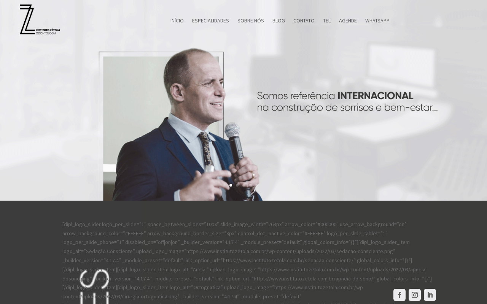
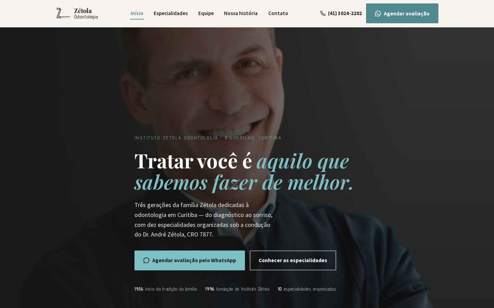
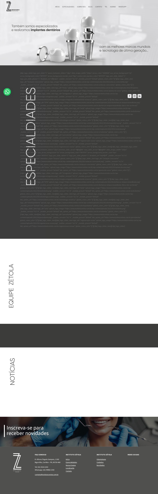
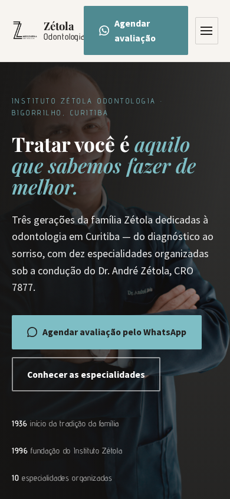

Evidência visual
O que está no ar hoje, ao lado da demonstração
Capturas de tela do site oficial (institutozetola.com.br) e da demonstração construída neste estudo, no mesmo dia.
Site oficial hoje — desktop

O shortcode [dipl_logo_slider ...] aparece como texto bruto no topo da página, expondo configurações internas do WordPress.
Demonstração proposta — desktop

A mesma marca — cor de destaque, tipografia e história — reorganizada em uma hero legível com um único caminho de conversão.
Site oficial hoje — página completa

Títulos girados na lateral prejudicam a leitura, e a seção de newsletter não renderiza nenhum campo de formulário.
Demonstração proposta — mobile

Composição própria para celular: menu off-canvas com foco acessível, especialidades em lista editorial e CTA de WhatsApp sempre visível.
Não foi possível capturar uma tela de celular do site oficial dentro do ambiente de verificação usado neste estudo — ver limitações no BUILD_REPORT.md. A demonstração completa (desktop e mobile) está disponível em index.html.
Prioridades
Três problemas documentados, três melhorias correspondentes
Problema 1Código quebrado exposto ao visitante
Shortcode de plugin visível na home
O shortcode [dipl_logo_slider ...] ocupa uma extensa área da página e expõe parâmetros internos do WordPress a qualquer visitante.
Melhoria: as dez especialidades foram reconstruídas como um índice editorial navegável (expansível, com imagem própria por especialidade), sem depender de nenhum plugin de terceiros.
Problema 2Formulário principal não renderiza
Newsletter e contato aparecem como [fc id]
Tanto a home quanto a página "Fale Conosco" mostram [fc id='1'][/fc] e [fc id='2'][/fc] no lugar do formulário — o principal caminho de conversão não funciona.
Melhoria: a demonstração substitui o formulário quebrado por um caminho de contato que já funciona hoje — WhatsApp com mensagem pré-preenchida, telefone e e-mail, todos verificados no próprio rodapé do site atual.
Problema 3CTA genérico e imagens sem alternativa textual
"CLIQUE AQUI!" e 5 de 8 imagens sem alt útil
A homepage atual usa a chamada genérica "CLIQUE AQUI!", sem informar se a ação agenda consulta, abre contato ou apresenta um tratamento — e a maioria das imagens carece de texto alternativo.
Melhoria: toda chamada da demonstração é específica ("Agendar avaliação pelo WhatsApp", "Ligar agora", "Conhecer as especialidades") e cada imagem recebeu texto alternativo descritivo.
Escopo
Entregáveis e dependências
O que está incluído nesta demonstração
- Site institucional completo (
index.html) com hero, história, dez especialidades, equipe, tecnologia e contato. - Folha de estilos e script próprios, sem framework ou dependência de build.
- Ativos de marca baixados diretamente do site oficial (logo, cores, tipografia, imagens de especialidade).
- Este documento de proposta, com evidência visual e apêndice técnico.
O que depende do Instituto Zétola para ir ao ar
- Confirmação editorial de todo o texto reconstruído a partir do site atual.
- Decisão sobre nomes/credenciais de outros profissionais da equipe, hoje não publicados.
- Acesso ao domínio e hospedagem para publicação (não realizada neste estudo).
- Validação jurídica do uso da frase de sucesso de 90% em regeneração óssea, hoje publicada apenas na página da especialidade.
Sequência sugerida
- 01
Validação de conteúdo
Revisão de cada fato reconstruído com a clínica.
- 02
Ajustes de marca
Confirmar paleta, tipografia e crops de imagem.
- 03
Publicação
Deploy em ambiente de homologação com domínio próprio.
- 04
Acompanhamento
Checagem de formulário/canal de contato após o ar.
Apêndice técnico
Auditoria de origem
Todos os problemas abaixo foram observados diretamente no site oficial em 2026-07-17. Fontes completas em SOURCE_MANIFEST.md.
| Problema observado | Onde | Evidência |
|---|---|---|
Shortcode [dipl_logo_slider ...] renderizado como texto |
Home | Confirmado por captura de tela e HTML bruto em 2026-07-17 |
Formulário [fc id='1'][/fc] / [fc id='2'][/fc] não renderiza |
Home e /contato/ | Confirmado por captura de tela e HTML bruto |
| Títulos de seção exibidos na vertical (Especialidades, Equipe Zétola, Notícias) | Home | Confirmado por captura de tela de página inteira |
| Grandes áreas vazias/desestruturadas | Home | Confirmado por captura de tela de página inteira |
| CTA genérico "CLIQUE AQUI!" | Home (banner) | Confirmado em prospect.json e reproduzido na captura do banner de implantes |
| Imagens sem texto alternativo útil | Home | Documentado em prospect.json (5 de 8 imagens do HTML) |
Endereço, telefone, WhatsApp, e-mail, redes sociais, especialidades e a biografia do Dr. André Zétola (CRO 7877) foram verificados diretamente nas páginas oficiais listadas em SOURCE_MANIFEST.md. Nenhum outro nome, credencial, prêmio, depoimento ou estatística foi adicionado além do que a própria clínica publica.